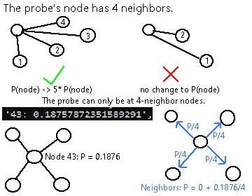
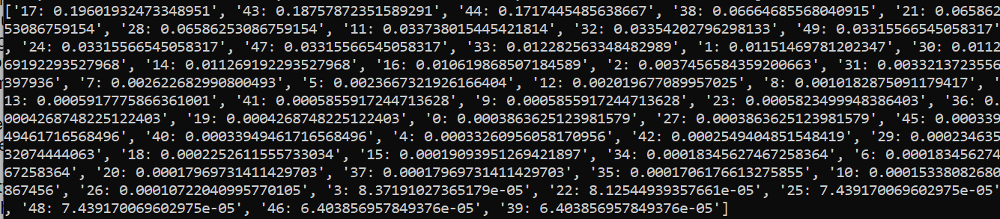
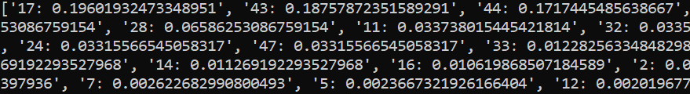
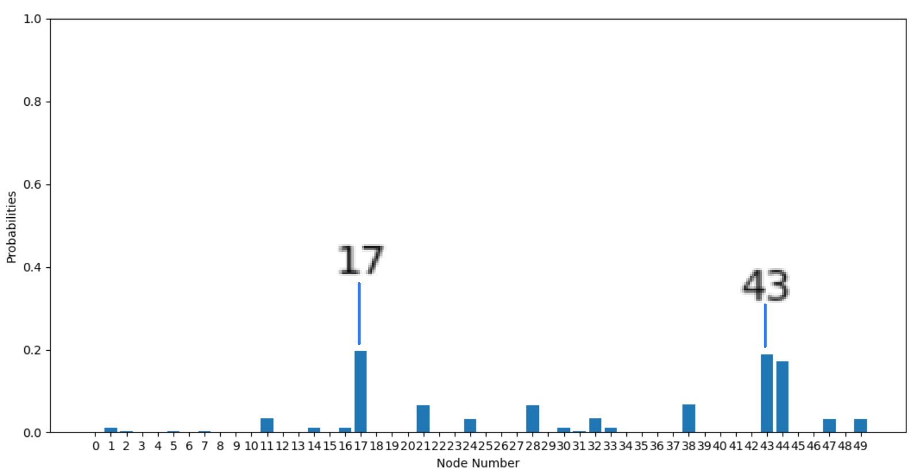

This is my biggest programming project by far, spanning the most learning and time I've ever thrown into any project. I did it as a Research Assistant and Intern under the Wright Scholar Program.
With my mentor's help and guidance, I developed a software solution to the following prompt: Given a network of blood vessels and a probe that swims around in that network, can we track and/or predict the probe's location at all times? We are given the layout of the blood vessel and the probe can access that layout.
So, how do we model the layout of a blood vessel network? They are quite complicated in reality, but we can reduce them in complexity with a few types of models. While coding, I practiced first with 2D and 3D mazes to get used to using filters (coming up soon), but the main version of my project used graph theory to model the blood vessels.
Graph theory is the study of graphs, which are objects made up of two things: "nodes" and "edges". One edge can connect two nodes. Nodes are typically numbered to identify them, and I did so in my project. In many applications, edges can take on "weight" and "direction", but for the purposes of my project, I did not give edges either attribute.
On recommendation from my mentor (Dr. Clark Taylor), I modeled the blood vessels as follows: each intersection of vessels becomes a node, and the segment of a vessel between two intersections (nodes) becomes an edge. The algorithm I wrote to randomly generate graph networks made sure that the graph was closed: you can get to any node from any other node in the graph by riding along enough edges.
My project was written entirely in Python. For the graph version, I used matplotlib for plotting and graphing, numpy and filterpy/scipy for math, and NetworkX for providing functions with graph objects. The 2D and 3D versions used pyglet, VPython, scipy, filterpy, and numpy.
Here's an example of what the graph looks like when first initiated. The left graph is the full blood vessel network. Each node (light blue) has a number and is connected to a few others by edges (rainbow lines). Line colors mean nothing; I only made them rainbow to make them easy to tell apart. The probe is the little red circle (at node 33). For my project, the probe can only be at nodes, not in-between. We assume that the probe can travel through blood vessels without problems.
On the right is the probe's "view" of the network. It can see all nodes it has been at and all nodes directly connected to the previous set of nodes. On initiation, it only sees the node where it is at (33 here) and the nodes connected to it. In this example, we can see that only 1 node is connected to node 33: node 14, also outlined in a thicker black border on the left graph. Node 14 is a "neighbor" of node 33.
I used particle filtering to track the probe in my project. A normal particle filter worked well on the 2D and 3D mazes, but not on the graph model. If you're interested in how a particle filter (or more generally, a Bayesian filter) works, click here.
The filter for this model works differently: the particles aren't at random spots and don't move around. They are simply used as "weights" for representing the probability of having the probe at a certain node. Upon generation, I assigned equal "weight", or probability, to each particle at each node because the probe spawns in a random node.
So, how do these weights help us track the probe? Well, because weight of a particle (from here on out, weight of a node) represents the probability of the probe being at that node. If we can find a way to redistribute probability in a way that shifts probability to "likelier" nodes and away from "unlikelier" nodes, then we have a good algorithm. The algorithm I ended up using consisted of two phases: the deduction phase and the update phase.
Deduction: This is where graph theory comes into play. Every time the probe moves one node around (or to a neighbor node), my program uses this deduction step. The probe knows how many nodes are neighbors of its current (new) node, so the only possible places it can be at are all nodes in the graph with the same neighbor count N. For all nodes that met this condition, their weight is increased by a significant factor (*5 in my code). For all the "impossible" nodes, nothing happens. For the technical people, yes, I did normalize the weights after this (making all the probabilities sum to 1).
Update: This runs right before the deduction phase in the code. It "redistributes" probability. Intuitively, think of having a probe at a certain node with N neighbors. If the probe can only move to 1 neighbor at a time (and we don't know which), the resultant probability of the probe being at any particular neighbor is 1/N. Multiply this by the original probability of the starting node, and that means that (probability of starting node / N)% chance goes out to all neighbors. This happens for every node in the network simultaneously and simulates the "movement" of the probe by "moving" probability around.
In theory, this will make the likelier positions of the node have higher weight (because they're directly increased) and will adequately track the probe too with the update phase. How'd that go in practice?
Well! I was surprised at the consistency and accuracy of the model myself. I'll let the graphs speak here.
The command-line output on the right shows that the weight for node 43 is the second-highest of all nodes in the network. The entire output is hard to read, so below it is the same output, but zoomed in.
Now, yes, node 17 is more probable than the correct node (43) in this example, but having the correct node in the top 2 and top 3 probabilities consistently is still challenging to do.
Here's another way of showing the probabilities: a bar graph. This is another way of seeing "success" in the algorithm: notice how most nodes have a probability of basically 0, and we've narrowed down 50 choices to about 3. Also, it would be better to have a top 3 list of nodes that we can reliably say our node could be at than a single really-high probability prediction that doesn't consistently pick the right node.
I conducted a small experiment to have real proof to back up the claim I just made. It's quite rudimentary, but it shows that the model is surprisingly accurate: here.
I learned a ton during this project:
Thanks for reading this far! Here's some extra stuff for you:
The probe is at node 43 with 4 neighbors.
   